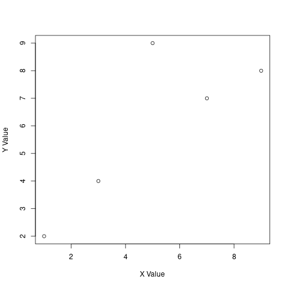
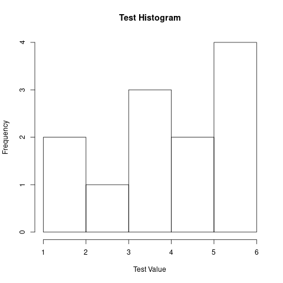
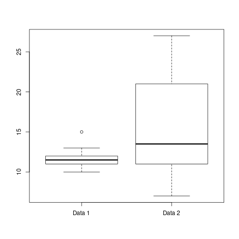
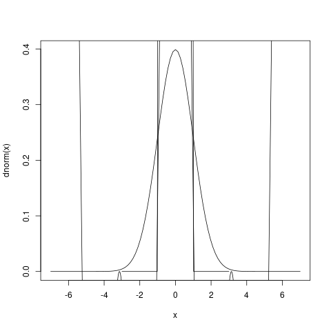

確率統計2022 R入門
1. R の起動と終了
システムによって異なりますが、通常はコマンドラインで R と入力するか、 R のアイコンをダブルクリックして起動します。R を終了させるときは、
q()
と入力します。
2. 簡単な変数への代入
変数とは様々な値を格納する箱のような概念です。例えば今 x という変数を考え、そこ に 123 を代入したければ、
(x <- 123)
[1] 123
とします。その後に x と打ち込むと、下記のように x の値が表示されます。
実は R は単一の数値だけでなく、複数の数値をベクトルとして扱うことが 得意です。例えばベクトル(1, 3, 5)を変数 y に代入したければ、c とい う記号を先頭に付けて、
(y <- c(1, 3, 5))
[1] 1 3 5
とします。
2 から 5 までの整数を 含むベクトルを作成するには、
(y <- c(2,3,4,5)) (y<-2:5) # 簡略化
[1] 2 3 4 5 [1] 2 3 4 5
課題 2-1:
変数 z にベクトル(10, 11, 12)を代入し、またそれを表示してみましょう。
(z <- c(10, 11, 12))
1 単一の数値(スカラー)は実は一次元ベクトルとみなされると考えればよい。
(x <- 123 )
3. 簡単な演算
四則演算を含む様々な演算を行うことが可能です。
1+2 ## 入力すれば、
[1] 3
ベクトルの演算も可能で
c(1, 2, 3) + c(4, 5, 6) # ベクトル+ベクトル c(1, 2, 3) * 2 # 全要素に2をかける (x <- c(1, 2, 3)) # 変数へのベクトル値の代入 (x <- x * 2) # x の保持するベクトル全要素に2をかける
[1] 5 7 9 [1] 2 4 6 [1] 1 2 3 [1] 2 4 6
課題 3-1:
変数 x にベクトル(1, 2, 3)、変数 y に 2 を代入し、x * y を計算して みましょう。 どんな答えが返ってきますか?
課題 3-2:
変数 x にベクトル(1, 2, 3)を代入し、さらにそれを 3 倍にした結果を x に格納しましょう。
#* COMMENT ベクトル，行列，リスト，データフレーム #ベクトル，行列，リスト，データフレーム
4. 簡単なベクトル演算
(x <- c(2,4,6,8,10)) # ベクトルの作成 length(x) # ベクトルの次元数、すなわちベクトル中の数値の個数 x[3] # 3 番目の数値を抽出する x[c(2,4)] # 2番目と 4 番目の数値を抽出 x[2:4] # 2 番目から 4 番目までの数値を抽出
[1] 2 4 6 8 10 [1] 5 [1] 6 [1] 4 8 [1] 4 6 8
ベクトルの比較演算
x x > 5 # ベクトルの各要素が 5 より大きいかの判定 which (x>5) 2 x[which(x>5)] x[x>5]
[1] 2 4 6 8 10 [1] FALSE FALSE TRUE TRUE TRUE [1] 3 4 5 [1] 6 8 10 [1] 6 8 10
- 判定した結果が TRUE, FALSE のベクトルとして返ってきます。
- which を使うと、何番目が T なのかが返ってきます。
文字列のベクトル
x <- c("Sunday", "Monday", "Tuesday", "Wednesday", "Thursday", "Friday", "Saturday") x[c(2,4)] x[2:4] grep("sd", x) # "sd"を含む要素を探す
[1] "Monday" "Wednesday" [1] "Monday" "Tuesday" "Wednesday" [1] 3 4 5
ベクトルの各要素の名前付け
x <- c(2, 4, 6) names(x) <- c("First", "Second", "Third") x[["Second"]]
x の names という 属性 に (“First”, “Second”, “Third”) が 付けられる。
数値ベクトルに対する様々な統計関数
sum(x) # x の合計、 mean(x) # x の平均 (x <- c(2,4,6,8,10)); sum(x > 5) # x の中のTRUEの数を数える
[1] 30 [1] 6 [1] 2 4 6 8 10 [1] 3
課題 4-1:
ベクトル(3, 1, 4, 1, 5, 9, 2, 6, 5)の中で 5 より大きい要素からなるベクトルを作成 しましょう。
課題 4-2:
ベクトル(1,2,3,4,5,6,7,8,9,10,11,12)に(“Jan”, “Feb”, “Mar”, “Apr”, “May”, “Jun”, “Jul”, “Aug”, “Sep”, “Oct”, “Nov”, “Dec”)という名前を付け、”Mar”という文字列を使って 3 番目の要素を取り出してみましょう。
5. 簡単な行列の作成と演算
ベクトルを集めて行列を作成する
(x <- rbind(c(1,2,3), c(4,5,6))) (x <- matrix(c(1, 4, 2, 5, 3, 6), nrow=2, ncol=3)) # nrow:行数， ncol:列数
[,1] [,2] [,3]
[1,] 1 2 3
[2,] 4 5 6
[,1] [,2] [,3]
[1,] 1 2 3
[2,] 4 5 6
x+1 x*2 y <- rbind(c(2, 4, 6), c(8, 10, 12)) x + y x * y x[2,3] x[2,] x[,3] t(x) # 転置
[,1] [,2] [,3]
[1,] 2 3 4
[2,] 5 6 7
[,1] [,2] [,3]
[1,] 2 4 6
[2,] 8 10 12
[,1] [,2] [,3]
[1,] 3 6 9
[2,] 12 15 18
[,1] [,2] [,3]
[1,] 2 8 18
[2,] 32 50 72
[1] 6
[1] 4 5 6
[1] 3 6
[,1] [,2]
[1,] 1 4
[2,] 2 5
[3,] 3 6
apply(x, 2, mean) # 行和，xの2次元目の各項の平均 apply(x, 1, mean) # 列和，xの1次元目の各項の平均
[1] 2.5 3.5 4.5 [1] 2 5
行列は 2 次元の数値の羅列ですが、 R では array(ベクトル、各次元の要素の個数)を使っ てさらに n 次元に拡張された配列を扱うことができます。
(x <- array(1:24, c(3,4,2))) # 3×4×2 の大きさの3次元配列を作成
, , 1
[,1] [,2] [,3] [,4]
[1,] 1 4 7 10
[2,] 2 5 8 11
[3,] 3 6 9 12
, , 2
[,1] [,2] [,3] [,4]
[1,] 13 16 19 22
[2,] 14 17 20 23
[3,] 15 18 21 24
課題5-1:
課題5-2: 上記結果に対して行、列それぞれの平均を求めましょう。
6. 簡単なリストの作成
リストは様々な型のデータをひとまとめにして管理できるデータ型です。
(x <- list("Oh", "Nomura", "Kadota")) (x <- list("Oh", "Nomura", "Kadota", c(868, 657, 567))) x[[2]] x[[4]]
[[1]]
[1] "Oh"
[[2]]
[1] "Nomura"
[[3]]
[1] "Kadota"
[[1]]
[1] "Oh"
[[2]]
[1] "Nomura"
[[3]]
[1] "Kadota"
[[4]]
[1] 868 657 567
[1] "Nomura"
[1] 868 657 567
各々の要素に名前を付けることも可能です。
(x <- list(First="Oh", Second="Nomura", Third="Kadota", Home_Runs=c(868, 657, 567)))
$First
[1] "Oh"
$Second
[1] "Nomura"
$Third
[1] "Kadota"
$Home_Runs
[1] 868 657 567
として、各々の要素に First, Second, Third, Home_Runs という名前が 付いていることを確認しましょう。
x[[4]] x$Home_Runs
[1] 868 657 567 [1] 868 657 567
課題 6-1: 名前が Yamagata のベクトル(“Tsuruoka”, “Sakata”, “Yonezawa”)と名前が Niigata のベクトル(“Yuzawa”, “Niitsu”, “Shibata”)を要素にしたようなリストを作成し、そ の中味を表示し てみましょう。8
7. 簡単なデータフレームの作成
R にはデータフレームと呼ばれる型が存在します。
- リストの一種で、行列と同じ二次元配列です。
データフレームの各々の行は1つのサンプルに対する観測値、 各列はサン プルに対する1つの項目とみなすことができます。 これを使うと、表を簡単に表現するこ とができます。 以下の表は日本プロ野球の5人の元選手の名前、在籍チーム名、通算打数、 安打数、本塁打数を表したものです。
Home_Runs 2901 657 3085 504 2543 504 2786 868 2566 567
(x <- data.frame( row.names = c("Nomura", "Harimoto", "Kinugasa", "Oh", "Kadota"), Team = c("Hawks", "Flyers", "Carps", "Giants", "Hawks"), At_Bat = c(10472, 9666, 9404, 9250, 8868), Hits = c(2901, 3085, 2543, 2786, 2566), Home_Runs = c(657, 504, 504, 868, 567) ))
Team At_Bat Hits Home_Runs
Nomura Hawks 10472 2901 657
Harimoto Flyers 9666 3085 504
Kinugasa Carps 9404 2543 504
Oh Giants 9250 2786 868
Kadota Hawks 8868 2566 567
x$Hits x[ c(1,5), c(2,3,4) ] # 1、5 行目と 2、3、4 列目を抽出する
[1] 2901 3085 2543 2786 2566
At_Bat Hits Home_Runs
Nomura 10472 2901 657
Kadota 8868 2566 567
attributes(x)
$names [1] "Team" "At_Bat" "Hits" "Home_Runs" $class [1] "data.frame" $row.names [1] "Nomura" "Harimoto" "Kinugasa" "Oh" "Kadota"
names(x) row.names(x) class(x)
[1] "Team" "At_Bat" "Hits" "Home_Runs" [1] "Nomura" "Harimoto" "Kinugasa" "Oh" "Kadota" [1] "data.frame"
課題 7-1:
下の表は G8 加盟国の国力の一部です。これをデータフレームとして変数にしま しょう5。
(x <- data.frame( row.names = c("USA", "England", "Italy", "Canada", "Germany", "Japan", "France", "Russia"), Area = c(9.4, 0.2, 0.3, 10.0, 0.3, 0.3, 0.5, 17.1), Population = c(315, 62, 60, 34, 82, 127, 62, 141), GDP = c(14, 3, 2, 2, 4, 5, 3, 2) ))
Area Population GDP
USA 9.4 315 14
England 0.2 62 3
Italy 0.3 60 2
Canada 10.0 34 2
Germany 0.3 82 4
Japan 0.3 127 5
France 0.5 62 3
Russia 17.1 141 2
課題 7-2:
上記で作成したデータフレームより G8 加盟国の国土面積、人口、GDP の 平均を それぞれ求めましょう。
x mean(x$Area) mean(x[["Population"]]) mean(x[,3]) c("mean(x$Area) = ", mean(x$Area))
Area Population GDP
USA 9.4 315 14
England 0.2 62 3
Italy 0.3 60 2
Canada 10.0 34 2
Germany 0.3 82 4
Japan 0.3 127 5
France 0.5 62 3
Russia 17.1 141 2
[1] 4.7625
[1] 110.375
[1] 4.375
[1] "mean(x$Area) = " "4.7625"
#* ファイル読み書き，プログラムの読み込み，関数定義
8. ファイルからの読み込み
データファイルとフォルダ
まず、以下のような数値データが書かれたファイルを用意しましょう。
- 仮にこのファイル 名を testdata.txt、
- ディレクトリの位置を /Users/saito/R/data とします。
14 14 21 35 6
まず setwd によって作業ディレクトリを/Users/saito/TMP にします。
setwd("/Users/saito/TMP")
数値列を読み込む scan 関数
次に scan コマンドを使って、データを変数 x に読み込みます。
(x <- scan("R-intro/data/08-01.txt"))
Read 5 items [1] 14 14 21 35 6
x にファイルの数値が ベクトル として読み込まれています。
表の読み込みを行う関数 read.table
以下のようなタブ区切 りのファイル batters.txt があったとします。
Team At_Bat Hits Home_Runs
Nomura Hawks 10472 2901 657
Harimoto Flyers 9666 3085 504
Kinugasa Carps 9404 2543 504
Oh Giants 9250 2786 868
Kadota Hawks 8868 2566 567
read.table により データ・フレームとして読み込む:
(batters <- read.table("R-intro/data/batters.txt", header=T, sep="\t", row.names=1))
Team At_Bat Hits Home_Runs
Nomura Hawks 10472 2901 657
Harimoto Flyers 9666 3085 504
Kinugasa Carps 9404 2543 504
Oh Giants 9250 2786 868
Kadota Hawks 8868 2566 567
x$Hits などで安打数を得ることができます。
x$Team x$Hits
[1] 3085 [1] Hawks Flyers Carps Giants Hawks Levels: Carps Flyers Giants Hawks [1] 2901 3085 2543 2786 2566
read.table の引数の意味 :
- "batters.txt"
- ファイル名
- header = T
- Team, At_Bat など のヘッダーがあることを示す
- sep = "\t"
- タブ区切りであることを示し
- row.names = 1
- 行の名前が1列分あることを指定
read.table の引数のオプション
- quote=""
- 引用符""の処理をしない。
- check.names=F
- 列ラベル名の自動変換が抑制される。
- omment.char=""
- コメント記号("#")を無効にできる。
課題 8: 課題 7-1 の表をタブ区切りファイルとして保存し、データフレー ムとして読み込んでみましょう。
9. ファイルへの書き出し (データの保存)
ファイル出力を行なう関数
write関数
- 一番簡単なのが write 関数でしょう。
- 変数に格納された数値をファイルに書き出すことができます。
x <- c(10, 12, 15, 19, 21, 34) write(x, "R-intro/data/outfile1.txt", ncolumns = 1)
- x の内容が R-intro/data/outfile1.txtというファイルに書き込まれます。
- ncolumns = 1 は数 値を1 列で出力することを指定しています。
行列データもファイルに書き出すことが可能で す。
x <- matrix(c(1,2,3,4,5,6), nrow=2, ncol=3, byrow=T) write(t(x), "R-intro/data/outfile2.txt", ncolumns=ncol(x), sep="\t")
- t(x)
- 行列 x を転置しないと、出力されるファイル中の行列が転置 されたものになってしまうので、注意が必要です。
- ncolumns=ncol(x)
- で出力される列数を行列 x の列数に揃え、
- sep = “\t”
- でタブ区切りファイルにすることを指定しています。
write.table関数
データフレームをファイルに出力する関数
batters[,c(3,4)] write.table(batters[,c(3,4)], "R-intro/data/outfile3.txt", sep="=\t", row.names=T, col.names=NA)
Hits Home_Runs
Nomura 2901 657
Harimoto 3085 504
Kinugasa 2543 504
Oh 2786 868
Kadota 2566 567
- row.names=T
- 行名(先頭に空白を挿入)を入れます。
- col.names=NA
- でそれぞれ行名、列名(先頭に空白を挿入)を入れます。
- quote=F
- 指定すると、二重引用符を除いた出力になります。
課題 9: 上記データフレームで、各バッターに対して打率、すなわち Hits / At_Bat を計算 し、その結果を”outfile4.txt”に格納しましょう。
10. プログラムの読み込み
一連の手続きをファイルにしておいて、それを必要なときに実行すること が可能です。
例えば、以下のような操作を記述したファイ ルを用意します。 ファイル名を R-intro/code/substtest.R とします。
x <- c(1,2,3,4,5) y <- c(2,4,6,8,10) z <- x + y
これを以下のように source(“substtest.R”)とすると、substtest.R 中に 記述された手続きを 実行することができます。結果として x, y, z それぞ れに値が代入されます。
source("R-intro/code/substtest.R") c(x,y,z)
[1] 1 2 3 4 5 2 4 6 8 10 3 6 9 12 15
課題 10: 課題 8 の手続きを dframetest.R というファイルに書き込み、 source を使ってその 手続きを実行してみましょう。14
11. 関数の定義
関数は数学的にはある入力に対応した出力を返すものです。
コンピュータプログラミングでは、まとまった処理の単位を表します8。
例えば今、二つの数を足して 2 で割る関数 plus を考えます。
これは数学では plus(x, y) = (x + y) / 2 などと記述できます。
function(引数リスト) { 関数本体 }
R では以下のよう に function を使って以下のように記述します。
plus <- function(x, y) { return ((x + y) / 2) } plus plus(10,20)
function(x, y) {
return ((x + y) / 2)
}
[1] 15
- これによって x と y を入力(引数)とする関数 plus が定義されます。 出力(返り値)が(x + y) / 2 となる。
- その後、 plus(10, 20) とすれば、
- x に 10、y に 20 が代入され、
- 関数plusが実行され，
- return は最終的な返り値を決め,
- 計算結果の 15 という答えが返ってくる。 関数のより一般的な定義の仕方は、
関数の一般的な定義の
関数名 <- function (引数 1, 引数 2, ···, ...) { 引数を使った様々な処理 return(返り値) }
課題 11:
f(x, a, b, c) = ax2 + bx + c を R の関数として実装しましょう。 f(4, 3, 2, 1)はいくつ になりますか。 #* グラフの作成
12.グラフの作成
R では簡単にグラフを作成する関数が用意されています。
plot 関数
二次元プロットを作成することができます。
例えば以下のように x 座標と y 座標の値をそれぞれベクトルとして与 えると、(1,2), (3,4), (5,9), (7,7), (9,8)の点にプロットを作成でき ます。
## ## 12. グラフの作成 ## x <- c(1,3,5,7,9) y <- c(2,4,9,7,8) plot(x, y, xlab="X Value", ylab="Y Value")

追加引数の中味: xlab, ylabでそれぞれx軸、y軸のラベルを指定しています。
barplot
棒グラフを作成することができます。
以下の例では、各棒の高さに対 応させるベクトルおよびそのラベルを変数 x に与え、barplot(x)を呼び出しています。
## ## 12. グラフの作成 ## x <- c(1,2,3,2,10,1) nam es(x) <- c("A", "B", "C", "D", "E", "F") barplot(x)
hist
ベクトルで与えられた数値群のヒストグラムを作成する関数です。
## ## 12.3 ヒストグラム ## x <- c(3.2, 1.2, 4.2, 2.3, 3.4, 5.9, 5.2, 5.3, 4.1, 5.2, 3.2, 1.4) hist(x, xlab = "Test Value", main = "Test Histogram")

main によってヒストグラムのタイトルを指定しています。
boxplot
は複数のベクトル中に含まれる値の分布を表す箱ひげ図を作成します。
## ## 12.4 箱ヒゲ図 ## x1 <- c(11,12,11,10,11,11,12,13,15,12,11,10,12,13) x2 <- c(20,21,27,9,12,23,23,12,11,9,21,15,7,12,12,9,23,15) boxplot(x1, x2, names=c("Data 1", "Data 2"))

- 中央値
- 外れ値
- 外れ値を除く上位25%
- この範囲に50%の データが分布する
- 外れ値を除く下位25%
課題 12:
課題 7-1 で与えられた表に関して、国土面積と人口の関係をプロットしてみまし ょう。 #* if, while, for 文
13. 基本的なプログラミングの構文
基本的なプログラミングの構文について, かいつまんで簡単に説明します。
13.1 if 文
if 文は与えられた条件11が成立するときのみ、与えられた手続きを実行す る構文です。
例えば x > 0 のときに y を 1 にする、それ以外は y を 0 にするとい う手続きは
# # if文： x > 0 のときに y を 1 にする、それ以外は y を 0 にするという手続 # x <- 5 if (x > 0) { y <- 1 } else { y <- 0 } list("result = ", y)
| result = | 1 |
とします。x = -5 にした後上記を実行し、y の値を調べてみましょう。 次に x = 3 にした後 上記を実行し、y の値を調べましょう。
if 文のより一般的な形式は以下の通りです。
# # if文の構文 # if (条件 1) { 条件 1 が成立したときの手続き } else if (条件 2) { 条件 1 が不成立、条件 2 が成立したときの手続き } else if (条件 3) { 条件 2 までが不成立、条件 3 が成立したときの手続き } else if ... : } else { 上記どの条件も成立しなかったときの手続き }
課題 13-1: 入力が 0 のときに 1、それ以外では 0 を返す関数 d を定義し ましょう。
## ## 課題 13-1: 入力が 0 のときに 1、それ以外では 0 を返す関数 d を定義し ## ましょう。 d <- function (x) { if ( x==0 ) { 1 } else { 0 } } d(0); d(1); d(-2)
[1] 1 [1] 0 [1] 0
13.2 while 文
while 文は与えられた条件が成立している間、与えられた手続きを繰り返 す構文です。
while 文の形式
条件文には&(論理積)や|(論理和)などの論理演算子が使えます。
# # while 文 # while (条件) { 条件が成立しているとき、実行する手続き }
です。
例えば
# # while文: 1 から 3 までが出力されます。 # x <- 1 while (x <= 3) { print(x); x <- x + 1 }
[1] 1 [1] 2 [1] 3
とすれば、1 から 3 までが出力されます。
- 最初に while 文に入ったとき、x は 1 なので、while 文の中の手続き である print(x)(x の値を表示する)が実行され、1 が表示されるととも に x <- x + 1 (x の値を 1 つ増やす)が 実行されます。while 文の最 後で x の値は 2 になっています。
- 次の while 文の条件判定において、x は 2 で 3 以下なので、while 文 の中の手続きであ る print(x)が実行され、2 が表示されるとともに x <- x + 1 (x の値を 1 つ増やす)が実行さ れます。while 文の最後で x の値は 3 になっています。
- その次の while 文の条件判定において、x は 3 で 3 以下なので、 while 文の中の手続き である print(x)が実行され、今回は 3 が表示さ れるとともに x <- x + 1 (x の値を 1 つ増やす)が実行されます。 while 文の最後で x の値は 4 になっています。
- その次の while 文の条件判定で x は 4 で 3 以下ではないので、条件 に合わず、while 文 から抜けます。
while 文の次の繰り返しを強制的に行う next、while 文から強制的に抜け る break 文な ども用意されている。
課題 13-2:
while 文を使って、1,3,5,7,9,11 を1行ずつ表示しましょう。
## ## 課題 13-2: ## ## while 文を使って、1,3,5,7,9,11 を1行ずつ表示しましょう。 ## n <- 1 while (n<13) { print(n) n <- n+2 }
[1] 1 [1] 3 [1] 5 [1] 7 [1] 9 [1] 11
13.3 for 文
for 文も while 文と同じ繰り返しですが、for 文では与えられた要素群の 中の要素1つ1つを変数に1回ずつ代入しながら繰り返し処理を行います。その 形式は、
# # for 文の構文 # for (変数 in 要素群) { 手続き }
です。
例えば、for (i in c(1,3,5)){ print(i) }で、1,3,5 が手続き中で使われ ている変数 i に毎回代入され、それが出力されます。
for (i in 1:5)){ print(i) }なら、1 から 5 までが変数 i に代入され、 それが出力されるでしょう。また以下の例は、1 から 5 までの二乗をベク トルにし ます。
# # for: 1 から 5 までの二乗をベクトルにし ます。 # x <- NULL for (i in 1:5) { x <- append(x, i**2) } x
[1] 1 4 9 16 25
- x <- NULL で空のベクトルを x に代入します。NULL は空を意味します。
- for 文で i に 1 から 5 までが順次代入され、代入の度に for 文の中 が実行されます。
- for 文の中で i の二乗(i**2)がベクトル x に追加されます。append(x, i)はベクトル x に i を追加する関数です14。
課題 13-3:
課題 12-2 を for 文を使って書き直しましょう。
実は for 文を使わなくても、x <- (1:5)**2 で同じことができる。
x <- c(x, i**2)でも良い。c はベクトルの連結にも使うことができる。
## ## 課題 13-3: ### 課題 12-2 を for 文を使って書き直しましょう。 ### 実は for 文を使わなくても、x <- (1:5)**2 で同じことができる。 ### x <- c(x, i**2)でも良い。c はベクトルの連結にも使うことができる。 (1:5)*2+1 seq(1,11,2) for (i in seq(1,11,2)) { print(i) }
[1] 3 5 7 9 11 [1] 1 3 5 7 9 11 [1] 1 [1] 3 [1] 5 [1] 7 [1] 9 [1] 11
#* その他
14. その他のコマンドや関数
R でよく使う関数をいくつか挙げておきましょう。
14.1 使い方
- help(関数)で関数の詳しい使い方が表示されます。
14.2 変数と属性
- ls()または objects()で現在定義されている変数が表示されます。
- class(変数)または mode(変数)でオブジェクトの型(例えば変数が数値な のか、文字なのか、リストなのか、行列かなど)を知ることができます。
- attributes(変数)で定義されている属性がリストで返ってきます。
14.3 apply 系関数
- apply を使うと、行列の各行または各列に対して同じ処理を繰り返し、結果をベクトル で受け取ることができます(5. 簡単な行列の作成と演算参照)。
- sapply を使うと、ベクトルの要素 1 つ 1 つを与えられた関数に入力し、出力結果を 1 つ 1 つ含んだベクトルとして得ることができます
func1_sub <- function(elm){ # スカラーelem に対する関数の定義 if(-1 <= elm & elm <= 1) { return (1) } else { return (0) } } func1 <- function(x) { # ベクトル x を入力とする関数 return(sapply(x, func1_sub)) }
14.4 図の作成
curve 関数で関数のグラフを作成できます。詳しくは help を参照して下 さい。
例:
curve(dnorm, -7, +7) # 正規分布の描画 curve(cos(x)+cos(2*x), -2*pi, 2*pi, 1000, add=T) # 1000はプロット数 curve(func1, -3, 3, add=T) # 14.3apply系関数で定義した関数
